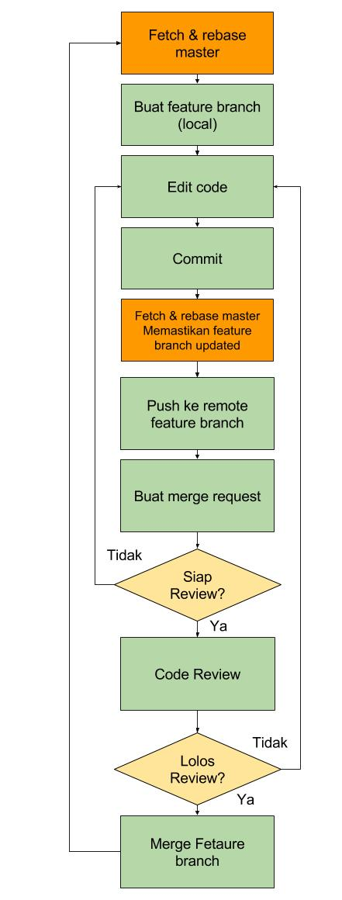

Flow

Keterangan: flow merge request dan pengerjaan fitur
Fetch & Rebase Master
- Pastikan repo lokal clean, tidak ada perubahan yang belum di commit. Cek status repo lokal dengan perintah:
~$ git status
- Cek dan pastikan ada di branch master dengan perintah
~$ git branch
- Kalau belum, pindah ke branch
mastermenggunakan perintah:
~$ git checkout master
- Fetch dan rebase, gunakan perintah:
~$ git pull --rebase origin master
Buat branch baru dan checkout di lokal
- Buat branch baru dengan menggunakan perintah
~$ git checkout -b nama-fitur
Edit file & commit lokal
- Lakukan edit pada file yang dikerjakan, ketika sudah selesai satu fitur lakukan commit
~$ git add nama_file #menambahkan nama_file yang akan di commit
~$ git commit #commit di repo lokal
atau jika akan menambahkan semua file yang sudah di edit untuk di commit:
~$ git add . #menambahkan semua yang telah di edit untuk di commit
~$ git commit #commit di repo lokal
-
Akan secara otomatis muncul text editor untuk menuliskan
COMMIT_EDITMSG, yaitu keterangan commit, berikan keterangan singkat dan jelas mengenai apa yang diubah di dalam commit tersebut, misal deskripsi fitur atau deskripsi bug yang di-solve. -
Lakukan rebase lagi memastikan repo lokal terupdate.
~$ git pull --rebase origin master
Bila terjadi konflik
Ketika proses rebase, ada kemungkinan terjadi conflict jika ada update di branch master di file yang sama dengan local feature branch.

Keterangan:
- File warna hijau adalah file yang sudah berhasil di 3-way merge secara otomatis oleh git, atau yang sudah di-resolve konfliknya secara manual dan dimasukkan ke commit stage dengan
git add nama_file - File warna merah adalah file yang di dalamnya masih ada konflik yang belum di-resolve.
- Status konflik bisa dicek dengan perintah
git status.
Jika konflik terjadi, maka:
- Lakukan resolve conflict secara manual di lokal (untuk file yang di highlight warna merah).
- Gunakan perintah
git add nama-file-konflikataunama-file-konflikbisa diganti dengan.jika akan memasukkan semua file yang sudah di-resolve. - Kemudian gunakan perintah
git rebase --continueuntuk melanjutkan proses rebase. - Lakukan terus sampai konflik ter resolve semua,
- Bisa dicek dengan perintah
git statustidak lagi menunjukkan ada konflik.
- Bisa dicek dengan perintah
Push ke remote feature branch
- Setelah commit baru dibuat di lokal, maka saatnya untuk push ke remote feature branch.
~$ git push origin nama-fitur
- Push ke fitur branch boleh dilakukan kapan saja, misal:
- untuk membuat backup data di server
- ketika fitur sudah selesai dan akan dilakukan merge request
- dengan catatan: tiap commit jelas melakukan apa, dan tercatat di
COMMIT_EDITMSG, sehingga keterangannya dapat dibaca dengan perintahgit log